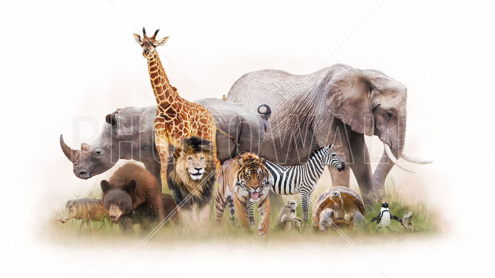
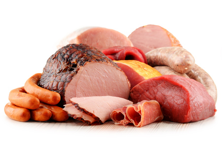

LOGIN
Welcome toThe Animal Product Finder
The Animals were an English rhythm and
blues and rock band, formed in Newcastle
upon Tyne in the early 1960s. The band moved to
London upon finding fame in 1964. The Animals
were known for their gritty, bluesy sound
and deep-voiced frontman Eric Burdon,
as exemplified by their signature song and
transatlantic number-one hit single,
"The House of the Rising Sun", as well as
by hits such as "We Gotta Get Out of This Place",
"It's My Life", "Don't Bring Me Down",
of the British Invasion of the US.

What Product are you searching forSEARCH
